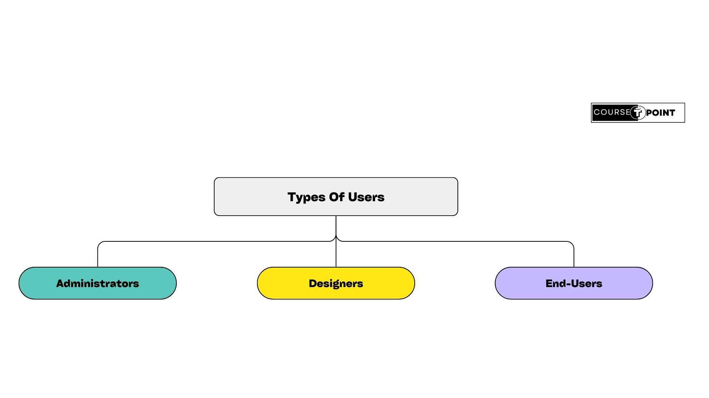
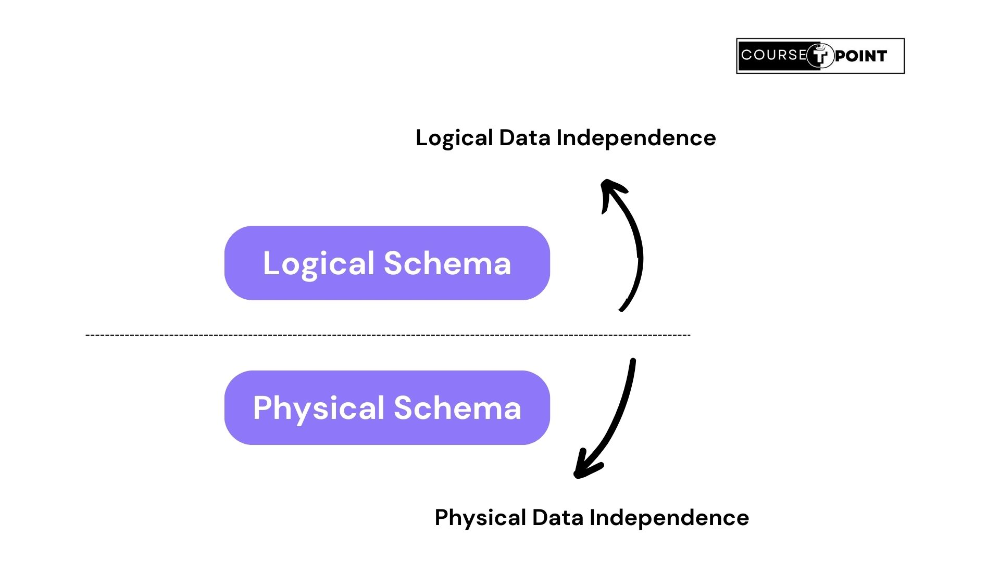

Database Management System
| Table Of Content | |
|---|---|
What is Databse?
Databse is a collection of related data and data is a collection of facts figures that can be processed to produce information. For example, consider the names, telephonenumbers , and addresses of the people you know. You may have recorded this data in an indexed address book or may have have stored it on a hard drive, using a personal computer and software such as Microsoft Access or Excel. This collection of related data with an implicit meaning is a database.
Mostly data represents recordable facts. Data aids in producing information, which is based on facts, For example, if have data about marks obtained by all students, we can then conclude about toppers and average marks.
What is Database Management System?
A Database Management System stores data in such a way that it becomes easier to retrieve, manipulate and produce information. The DBMS is a general-purpose-software-system that facilitates the process of defining, constructing, manipulating, and sharing databases among various users and applications. Defining a database involves specifying the data types, structures, and constraints of the data to be stored in the database.
Characteristics of DBMS:
Traditionally, data was organised in file formats. DBMS was a new concept then, and all research was done to make it overcome the deficiencies in traditional style of data management. A modern DBMS has the following characteristics -
- Read-World Entity: A modern DBMS is more realistic and users real-world entities to design its architecture. It uses the behaviour and attributes too. For example, a school database may use students as an entity and their age as an attribute.
- Relational-bsed tables: DBMS allows entities and relations among them to form tables. A user can understand the architecture of a databse just by looking at the table names.
- Isolation of data & application: A database system is entirely different than its data. A Database is an active entity, whereas data is said to be passive , on which the database works and organise. DBMS also stores metadata, which is data about data, to ease its own process.
- Less Redundancy: DBMS follows the rule of Normalization, which splits a relation when any of its attributes is having redundancy in values. Normalization is a mathematically a rich and scientific process that reduce data redundancy.
- Consistency: Consistency is a state where every relation in a database remains consistent. There exist methods and techniques , which can detect attempt of leaving database in inconsistent state. A DBMS can provide greater consistency as compared to earlier forms of data storing applications like file-processing systems.
- Query Language: DBMS is equipped with query language, which makes it more efficient to retrieve and manipulate data. A user can apply as many and as different filtering options as required to retrieve a set of data. Traditionally it was not possible where file-processing system was used.
- ACID Properties: DBMS follows the concept of Atomicity, Consistency, Isolation & Durability (normally shortened as ACID). These concepts are applied on transactions, which manipulate data in a database
- Multiuser and Concurrent Access: DBMS supports multi-user environment and allows them to access and manipulate data in parallel. Through there are restrictions on transactions when users attempt to handle the same data item, but users are always unaware of them.
- Multiple View: DBMS offers multiple views for different users. A user who is in the sales department will have a different view of database than a person working in the Production department. This feature enables the users to have a concentrate view of database according to their requirements.
- Security: DBMS offers methods to impose constraints while entering data into the database and retrieving the same at a later stage.
Types of Users:
A typical DBMS has users with different rights and permissions who use it for different purposes. Some users retrieve data and some back it up. The users of a DBMS can be broadly categorized as follows-
 Administrators:Administrators maintain the DBMS and are responsible for administration the database. They are responsible to look after its usage and by whom it should be used. They create access profiles for users and apply limitations to maintain isolation and force security. Administrators also look after DBMS resources like system license, required tools, and other software and hardware related maintainence.
Designers:Designers are the group of people who actually work on the designing part of the database. They keep a close watch on what data should be kept in what format. They identify and design the whole set of entities, relations, constraints, and views.
End Users:End users are those actually reap the benefits of having a DBMS. End Users can range from simple viewers who pay attention to the logs or market rates to sophisticated users such as business analysts.
Database Architecture
The design of a DBMS depends on its architecture. It can be centralized or hierarchical. The architecture of a DBMS can be seen as either single tier or multi-tier. An n-tier architecture divides the whole system into related but independent n modules, which can be independently modified, altered, changed, or replaced.
In 1-tier architecture, the DBMS is the only entity where the user directly sits on the DBMS and uses it. Any changes done here will directly be done on the DBMS itself. It does not provide handy tools for end-users. Database designers and programmers normally prefer to use single-tier architecture.
If the architecture of DBMS is 2-tier, then it must have an application through which the DBMS can be accessed. Programmers use 2-tier architecture where they access the DBMS by means of an application. Here the application tier is entirely independent of the database in terms of operation, design, and programming.
3-tier Architecture: A 3-tier Architecture separates its tiers from each other based on the complexity of the users and how they use the data present in the database. It is the most widely used architecture to design a DBMS.
- Database(Data) Tier- At this tier, the database resides along with its query processing languages. We also have the relations that define the data and their constraints at this level.
- Application(Middle) Tier- At this tier reside the application serve and the programs that access the database. For a user, this application tier presents an abstracted view of the database. End-users are unaware of any existence of the database beyond the application. At the other end, the database tier is not aware of any other user beyond the application tier. Hence, the application layer sits in the middle and acts as a mediator between the end-user and the database.
- User(Presentation) Tier- End-Users operate on this tier and they know nothing about any existence of the database beyond this layer. At this layer, multiple views of the database can be provided by the application. All views are generated by applications that reside in the application tier.
Database Schema:
A database schema is the skeleton structure that represents the logical view of the entire database. It defines how the data is organized and how the relations among them are associated. It formulates all the constraints that are to be applied on the data.A database schema defines its entities and the relationship among them. It contains a descriptive detail of the database, which can be depicted by means of schema diagrams. It's the database designers who design the schema to help programmers understand the database and make it useful.
A database schema can be divided broadly into two categories-
- Physical Database Schema: This schema pertains to the actual storage of data and its form of storage like files, indices, etc. It defines how the data will be stored in a secondary storage.
- Logical Database Schema: This schema defines all the logical constraints that need to be applied on the data stored. It defines tables, views, and integrity constraints.
Database Instance & Independence:
Database Instance:
It is important that we distinguish these two terms individually. Databbase schema is the skeleton of database. It is designed when the database doesn't exist at all. Once the database is operational, it is very difficult to make any changes to it. A database schema does not contain any data or information.
A database instance is a state of operational database with data at any given time. It contains a snapshot of the database. Database instances tend to change with time. A DBMS ensures that its every instance (state) is in a valid state, by diligently following all the validations, constraints, and consitions that the database designers have imposed.
If a database system is not multi-layered, then it becomes difficult to make any changes in the database system. Database systems are designed in multi-layered as we learnt earlier.
Data Independence:
A database system normally contains a lot of data in addition to users' data. For example, it stores data about data, known as metadata, to locate and retrieve data easily. It is rather difficult to modify and update a set of metadata once it is stored in the database. But as a DBMS expands, it needs to change over time to satisfy the requirements of the users. If the entire data is dependent, it would become a tedious and highly complex job.
Metadata itself follows a layered architecture, so that when we change data one layer, it does not affect data at another level. The data is independent but mapped to each other.
Logical Data Independence: Logical data is data about database, that is, it stores information about how data is managed inside. For example, a table(relation) stored in the database and all its constraints, applied on that relation.
Logical data independence is a kind of mechanism, which liberalizes itself from actual data stored on the disk. If we do some changes on table format, it should not change the data residing on the disk.
Physical Data Independence: